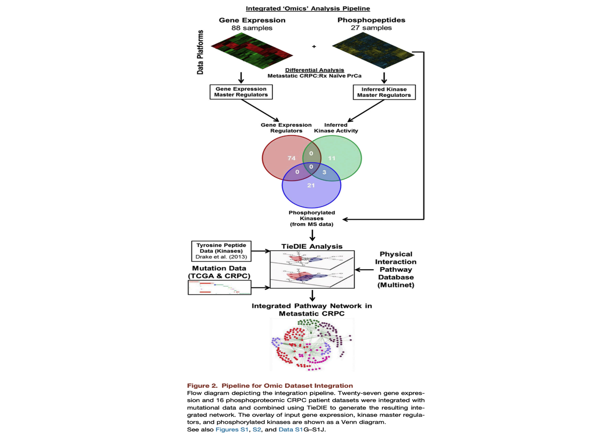
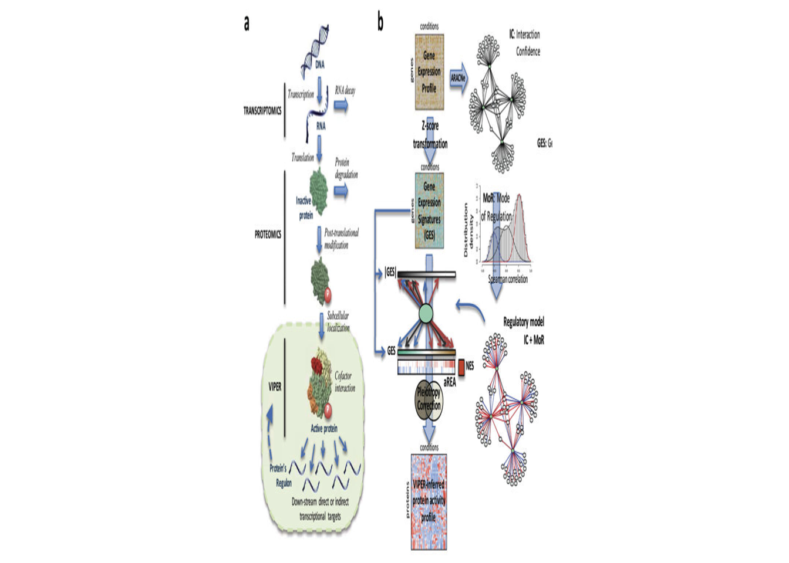

Last updated: 2024-06-25
Checks: 6 1
Knit directory: PPP/
This reproducible R Markdown analysis was created with workflowr (version 1.7.1). The Checks tab describes the reproducibility checks that were applied when the results were created. The Past versions tab lists the development history.
The R Markdown file has unstaged changes. To know which version of
the R Markdown file created these results, you’ll want to first commit
it to the Git repo. If you’re still working on the analysis, you can
ignore this warning. When you’re finished, you can run
wflow_publish to commit the R Markdown file and build the
HTML.
Great job! The global environment was empty. Objects defined in the global environment can affect the analysis in your R Markdown file in unknown ways. For reproduciblity it’s best to always run the code in an empty environment.
The command set.seed(20240521) was run prior to running
the code in the R Markdown file. Setting a seed ensures that any results
that rely on randomness, e.g. subsampling or permutations, are
reproducible.
Great job! Recording the operating system, R version, and package versions is critical for reproducibility.
Nice! There were no cached chunks for this analysis, so you can be confident that you successfully produced the results during this run.
Great job! Using relative paths to the files within your workflowr project makes it easier to run your code on other machines.
Great! You are using Git for version control. Tracking code development and connecting the code version to the results is critical for reproducibility.
The results in this page were generated with repository version 85fc7b1. See the Past versions tab to see a history of the changes made to the R Markdown and HTML files.
Note that you need to be careful to ensure that all relevant files for
the analysis have been committed to Git prior to generating the results
(you can use wflow_publish or
wflow_git_commit). workflowr only checks the R Markdown
file, but you know if there are other scripts or data files that it
depends on. Below is the status of the Git repository when the results
were generated:
Ignored files:
Ignored: .DS_Store
Ignored: .RData
Ignored: .Rhistory
Ignored: .Rproj.user/
Ignored: analysis/.DS_Store
Ignored: analysis/.RData
Ignored: analysis/.Rhistory
Ignored: code/.DS_Store
Ignored: code/TieDIE-tiedie2/.DS_Store
Ignored: code/TieDIE-tiedie2/examples/.DS_Store
Ignored: data/.DS_Store
Ignored: data/Phosphoproteome_BCM_GENCODE_v34_harmonized_v1/.DS_Store
Ignored: data/Phosphoproteome_BCM_GENCODE_v34_harmonized_v1/README/.DS_Store
Ignored: data/Proteome_BCM_GENCODE_v34_harmonized_v1/.DS_Store
Ignored: data/Proteome_BCM_GENCODE_v34_harmonized_v1/README/.DS_Store
Ignored: output/.DS_Store
Ignored: output/MUT/.DS_Store
Ignored: output/cnv/.DS_Store
Ignored: output/expr/.DS_Store
Ignored: output/pho/.DS_Store
Ignored: output/regulon/.DS_Store
Ignored: temp/.DS_Store
Untracked files:
Untracked: output/DAP/hnsc_fc_kinases.csv
Untracked: output/DAP/kirc_fc_kinases.csv
Untracked: output/DAP/luad_fc_kinases.csv
Untracked: output/DAP/lusc_fc_kinases.csv
Untracked: output/DAP/paad_fc_kinases.csv
Untracked: output/cnv/hnsc/cnv_regulators.csv
Untracked: output/cnv/kirc/cnv_regulators.csv
Untracked: output/cnv/luad/cnv_regulators.csv
Untracked: output/cnv/lusc/cnv_regulators.csv
Untracked: output/cnv/paad/cnv_regulators.csv
Untracked: output/pho/hnsc/kinase_regulators.csv
Untracked: output/pho/kirc/kinase_regulators.csv
Untracked: output/pho/luad/kinase_regulators.csv
Untracked: output/pho/lusc/kinase_regulators.csv
Untracked: output/pho/paad/kinase_regulators.csv
Unstaged changes:
Modified: analysis/Differentially_Protein.Rmd
Modified: analysis/Identify_CNV_Regulators.Rmd
Modified: analysis/Identify_Kinase_Regulators.Rmd
Modified: analysis/KSEA.Rmd
Modified: analysis/index.Rmd
Deleted: code/TieDIE-devel/LICENSE.txt
Deleted: code/TieDIE-devel/README.md
Deleted: code/TieDIE-devel/bin/makeKernel.py
Deleted: code/TieDIE-devel/bin/makeKernel.sh
Deleted: code/TieDIE-devel/bin/mapSamples
Deleted: code/TieDIE-devel/bin/masterReg
Deleted: code/TieDIE-devel/bin/n1_pchip
Deleted: code/TieDIE-devel/bin/network_diffusion_kernel.m
Deleted: code/TieDIE-devel/bin/pagerank_power.m
Deleted: code/TieDIE-devel/bin/personalized_pagerank_powermethod.m
Deleted: code/TieDIE-devel/bin/sherpa
Deleted: code/TieDIE-devel/bin/span.R
Deleted: code/TieDIE-devel/bin/tiedie
Deleted: code/TieDIE-devel/bin/tiedie.PSN
Deleted: code/TieDIE-devel/doc/Makefile
Deleted: code/TieDIE-devel/doc/Tutorial.bib
Deleted: code/TieDIE-devel/doc/Tutorial.pdf
Deleted: code/TieDIE-devel/doc/Tutorial.tex
Deleted: code/TieDIE-devel/doc/Tutorial.toc
Deleted: code/TieDIE-devel/examples/hnsc.sh
Deleted: code/TieDIE-devel/examples/hnsc/CNV.txt
Deleted: code/TieDIE-devel/examples/hnsc/Makefile
Deleted: code/TieDIE-devel/examples/hnsc/TieDIE/TieDIE.sif
Deleted: code/TieDIE-devel/examples/hnsc/TieDIE/edge_frequencies.txt
Deleted: code/TieDIE-devel/examples/hnsc/TieDIE/exprs.txt:methy.txt.dist.txt
Deleted: code/TieDIE-devel/examples/hnsc/TieDIE/exprs.txt:phos.txt.dist.txt
Deleted: code/TieDIE-devel/examples/hnsc/TieDIE/exprs.txt:prot.txt.dist.txt
Deleted: code/TieDIE-devel/examples/hnsc/TieDIE/heats.NA
Deleted: code/TieDIE-devel/examples/hnsc/TieDIE/heats.tab
Deleted: code/TieDIE-devel/examples/hnsc/TieDIE/methy.txt:phos.txt.dist.txt
Deleted: code/TieDIE-devel/examples/hnsc/TieDIE/methy.txt:prot.txt.dist.txt
Deleted: code/TieDIE-devel/examples/hnsc/TieDIE/node_frequencies.txt
Deleted: code/TieDIE-devel/examples/hnsc/TieDIE/node_heats.txt
Deleted: code/TieDIE-devel/examples/hnsc/TieDIE/phos.txt:prot.txt.dist.txt
Deleted: code/TieDIE-devel/examples/hnsc/exprs.txt
Deleted: code/TieDIE-devel/examples/hnsc/methy.txt
Deleted: code/TieDIE-devel/examples/hnsc/pathway.sif
Deleted: code/TieDIE-devel/examples/hnsc/phos.txt
Deleted: code/TieDIE-devel/examples/hnsc/prot.txt
Deleted: code/TieDIE-devel/examples/kirc.sh
Deleted: code/TieDIE-devel/examples/kirc/CNV.txt
Deleted: code/TieDIE-devel/examples/kirc/Makefile
Deleted: code/TieDIE-devel/examples/kirc/exprs.txt
Deleted: code/TieDIE-devel/examples/kirc/methy.txt
Deleted: code/TieDIE-devel/examples/kirc/pathway.sif
Deleted: code/TieDIE-devel/examples/kirc/phos.txt
Deleted: code/TieDIE-devel/examples/kirc/prot.txt
Deleted: code/TieDIE-devel/examples/luad.sh
Deleted: code/TieDIE-devel/examples/luad/CNV.txt
Deleted: code/TieDIE-devel/examples/luad/Makefile
Deleted: code/TieDIE-devel/examples/luad/exprs.txt
Deleted: code/TieDIE-devel/examples/luad/methy.txt
Deleted: code/TieDIE-devel/examples/luad/pathway.sif
Deleted: code/TieDIE-devel/examples/luad/phos.txt
Deleted: code/TieDIE-devel/examples/luad/prot.txt
Deleted: code/TieDIE-devel/examples/lusc.sh
Deleted: code/TieDIE-devel/examples/lusc/CNV.txt
Deleted: code/TieDIE-devel/examples/lusc/Makefile
Deleted: code/TieDIE-devel/examples/lusc/exprs.txt
Deleted: code/TieDIE-devel/examples/lusc/methy.txt
Deleted: code/TieDIE-devel/examples/lusc/pathway.sif
Deleted: code/TieDIE-devel/examples/lusc/phos.txt
Deleted: code/TieDIE-devel/examples/lusc/prot.txt
Deleted: code/TieDIE-devel/examples/paad.sh
Deleted: code/TieDIE-devel/examples/paad/CNV.txt
Deleted: code/TieDIE-devel/examples/paad/Makefile
Deleted: code/TieDIE-devel/examples/paad/exprs.txt
Deleted: code/TieDIE-devel/examples/paad/methy.txt
Deleted: code/TieDIE-devel/examples/paad/pathway.sif
Deleted: code/TieDIE-devel/examples/paad/phos.txt
Deleted: code/TieDIE-devel/examples/paad/prot.txt
Deleted: code/TieDIE-devel/galaxy/tiedie.py
Deleted: code/TieDIE-devel/galaxy/tiedie.xml
Deleted: code/TieDIE-devel/lib/consensus.py
Deleted: code/TieDIE-devel/lib/consensus.pyc
Deleted: code/TieDIE-devel/lib/distance.py
Deleted: code/TieDIE-devel/lib/distance.pyc
Deleted: code/TieDIE-devel/lib/distributions.py
Deleted: code/TieDIE-devel/lib/distributions.pyc
Deleted: code/TieDIE-devel/lib/kernel.py
Deleted: code/TieDIE-devel/lib/kernel.pyc
Deleted: code/TieDIE-devel/lib/kernel_scipy.py
Deleted: code/TieDIE-devel/lib/kernel_scipy.pyc
Deleted: code/TieDIE-devel/lib/kernel_tensorflow.py
Deleted: code/TieDIE-devel/lib/kernel_tensorflow.pyc
Deleted: code/TieDIE-devel/lib/linkers.py
Deleted: code/TieDIE-devel/lib/linkers.pyc
Deleted: code/TieDIE-devel/lib/master_reg.py
Deleted: code/TieDIE-devel/lib/master_reg.pyc
Deleted: code/TieDIE-devel/lib/pathway.py
Deleted: code/TieDIE-devel/lib/permute.py
Deleted: code/TieDIE-devel/lib/permute.pyc
Deleted: code/TieDIE-devel/lib/ppr.py
Deleted: code/TieDIE-devel/lib/ppr.pyc
Deleted: code/TieDIE-devel/lib/tiedie_util.py
Deleted: code/TieDIE-devel/lib/tiedie_util.pyc
Deleted: code/TieDIE-devel/pathways/Superpathway_Collapsed_2.0.KERNEL.zip
Deleted: code/TieDIE-devel/pathways/Superpathway_Collapsed_2.0.zip
Deleted: code/TieDIE-devel/test/kernel_tests.py
Deleted: code/TieDIE-devel/test/pathway_tests.py
Deleted: code/TieDIE-devel/test/regression.py
Deleted: code/TieDIE-devel/test/run-all.sh
Deleted: code/TieDIE-devel/test/test_files/PSN/BRCA/downstream.input
Deleted: code/TieDIE-devel/test/test_files/PSN/BRCA/upstream.input
Deleted: code/TieDIE-devel/test/test_files/PSN/expr.data
Deleted: code/TieDIE-devel/test/test_files/PSN/expr.ranked.tab
Deleted: code/TieDIE-devel/test/test_files/PSN/kernel.tab
Deleted: code/TieDIE-devel/test/test_files/PSN/mut.data
Deleted: code/TieDIE-devel/test/test_files/PSN/pathway.sif
Deleted: code/TieDIE-devel/test/test_files/PSN/upstream.input
Deleted: code/TieDIE-devel/test/test_files/REGRESSION/edge_frequencies.txt
Deleted: code/TieDIE-devel/test/test_files/REGRESSION/heats.NA
Deleted: code/TieDIE-devel/test/test_files/REGRESSION/heats.tab
Deleted: code/TieDIE-devel/test/test_files/REGRESSION/node_frequencies.txt
Deleted: code/TieDIE-devel/test/test_files/REGRESSION/node_heats.txt
Deleted: code/TieDIE-devel/test/test_files/REGRESSION/test_files.downstream.input:test_files.upstream.input.dist.txt
Deleted: code/TieDIE-devel/test/test_files/REGRESSION/tiedie.sif
Deleted: code/TieDIE-devel/test/test_files/cytoscape/downstream.input
Deleted: code/TieDIE-devel/test/test_files/cytoscape/java_results/adj.txt
Deleted: code/TieDIE-devel/test/test_files/cytoscape/java_results/deg.txt
Deleted: code/TieDIE-devel/test/test_files/cytoscape/java_results/exp.txt
Deleted: code/TieDIE-devel/test/test_files/cytoscape/java_results/lap.txt
Deleted: code/TieDIE-devel/test/test_files/cytoscape/pathway.sif
Deleted: code/TieDIE-devel/test/test_files/cytoscape/scipy_results/kernel.tab
Deleted: code/TieDIE-devel/test/test_files/cytoscape/upstream.input
Deleted: code/TieDIE-devel/test/test_files/downstream.input
Deleted: code/TieDIE-devel/test/test_files/kernel.tab
Deleted: code/TieDIE-devel/test/test_files/test.pathway.sif
Deleted: code/TieDIE-devel/test/test_files/test.tfnet.data.tab
Deleted: code/TieDIE-devel/test/test_files/test.tfnet.sif
Deleted: code/TieDIE-devel/test/test_files/test.tfnetbig.data.tab
Deleted: code/TieDIE-devel/test/test_files/test.tfnetbig.sif
Deleted: code/TieDIE-devel/test/test_files/upstream.diffused
Deleted: code/TieDIE-devel/test/test_files/upstream.input
Deleted: code/TieDIE-devel/test/test_masterReg.sh
Deleted: code/TieDIE-devel/test/test_mr.py
Deleted: code/TieDIE-devel/test/test_psn.py
Deleted: code/TieDIE-devel/test/tiedie_cytoscape_tests.py
Deleted: code/TieDIE-devel/test/util_tests.py
Modified: output/DAP/hnsc_KSA_gold_standard_0.05.csv
Deleted: output/DAP/hnsc_fc_0.05_kinases.csv
Modified: output/DAP/kirc_KSA_gold_standard_0.05.csv
Deleted: output/DAP/kirc_fc_0.05_kinases.csv
Modified: output/DAP/luad_KSA_gold_standard_0.05.csv
Deleted: output/DAP/luad_fc_0.05_kinases.csv
Modified: output/DAP/lusc_KSA_gold_standard_0.05.csv
Deleted: output/DAP/lusc_fc_0.05_kinases.csv
Modified: output/DAP/paad_KSA_gold_standard_0.05.csv
Deleted: output/DAP/paad_fc_0.05_kinases.csv
Modified: output/cnv/dset_hnsc.RDS
Modified: output/cnv/dset_kirc.RDS
Modified: output/cnv/dset_luad.RDS
Modified: output/cnv/dset_lusc.RDS
Modified: output/cnv/dset_paad.RDS
Modified: output/cnv/regul_hnsc.RDS
Modified: output/cnv/regul_kirc.RDS
Modified: output/cnv/regul_luad.RDS
Modified: output/cnv/regul_lusc.RDS
Modified: output/cnv/regul_paad.RDS
Deleted: output/pho/hnsc/kinase_regulators.txt
Deleted: output/pho/kirc/kinase_regulators.txt
Deleted: output/pho/luad/kinase_regulators.txt
Deleted: output/pho/lusc/kinase_regulators.txt
Deleted: output/pho/paad/kinase_regulators.txt
Note that any generated files, e.g. HTML, png, CSS, etc., are not included in this status report because it is ok for generated content to have uncommitted changes.
These are the previous versions of the repository in which changes were
made to the R Markdown (analysis/index.Rmd) and HTML
(docs/index.html) files. If you’ve configured a remote Git
repository (see ?wflow_git_remote), click on the hyperlinks
in the table below to view the files as they were in that past version.
| File | Version | Author | Date | Message |
|---|---|---|---|---|
| Rmd | 85fc7b1 | Zhen Zuo | 2024-06-24 | . |
| Rmd | f0809ae | Zhen Zuo | 2024-06-17 | . |
| html | f0809ae | Zhen Zuo | 2024-06-17 | . |
| Rmd | 564acc4 | Zhen Zuo | 2024-06-17 | . |
| html | 552889c | Zhen Zuo | 2024-06-17 | Build site. |
| Rmd | 0bc35cf | Zhen Zuo | 2024-06-17 | Publish files |
| html | 74ab098 | Zhen Zuo | 2024-06-16 | Build site. |
| Rmd | 9b65e6b | Zhen Zuo | 2024-06-16 | Publish files |
| html | 9d7bb61 | Zhen Zuo | 2024-06-16 | . |
| html | e55118d | Zhen Zuo | 2024-06-16 | Build site. |
| html | 7576f76 | Zhen Zuo | 2024-06-16 | wflow_publish("*", all = TRUE) |
| Rmd | f9811b1 | Zhen Zuo | 2024-06-16 | . |
| html | 3477290 | Zhen Zuo | 2024-06-16 | update workflow |
| Rmd | 8c84adb | Zhen Zuo | 2024-06-16 | . |
| html | 8c84adb | Zhen Zuo | 2024-06-16 | . |
| Rmd | 411d1f3 | Zhen Zuo | 2024-06-13 | . |
| html | d7a98b6 | Zhen Zuo | 2024-06-12 | Build site. |
| Rmd | f432ac9 | Zhen Zuo | 2024-06-12 | Publish files |
| html | 2c9fa0b | Zhen Zuo | 2024-06-12 | Build site. |
| html | b1c8644 | Zhen Zuo | 2024-06-11 | Build site. |
| html | 589e25d | Zhen Zuo | 2024-06-11 | wflow_publish("*", all = TRUE) |
| html | 420e740 | Zhen Zuo | 2024-06-11 | Build site. |
| html | 04e3443 | Zhen Zuo | 2024-06-11 | Build site. |
| Rmd | 334dcce | Zhen Zuo | 2024-06-11 | Publish files |
| Rmd | bec31d5 | Zhen Zuo | 2024-06-10 | . |
| html | 7c1057b | Zhen Zuo | 2024-06-10 | Build site. |
| Rmd | 3634258 | Zhen Zuo | 2024-06-10 | Publish files |
| html | 713554a | Zhen Zuo | 2024-06-09 | Build site. |
| Rmd | 92519a0 | Zhen Zuo | 2024-06-09 | Publish files |
| html | 7f39b67 | Zhen Zuo | 2024-06-09 | Build site. |
| Rmd | f913cbc | Zhen Zuo | 2024-06-09 | Publish files |
| html | 3a26fb0 | Zhen Zuo | 2024-05-28 | Build site. |
| html | da0867e | Zhen Zuo | 2024-05-28 | Build site. |
| Rmd | 3592dd6 | Zhen Zuo | 2024-05-28 | Publish files |
| html | 5de8ce9 | Zhen Zuo | 2024-05-28 | Build site. |
| Rmd | 3d1adad | Zhen Zuo | 2024-05-28 | Publish files |
| html | 7e476e7 | Zhen Zuo | 2024-05-24 | Build site. |
| Rmd | 17401c9 | Zhen Zuo | 2024-05-24 | Publish files |
| html | 6df58df | Zhen Zuo | 2024-05-24 | Build site. |
| Rmd | fe48b9f | Zhen Zuo | 2024-05-24 | Publish files |
| html | 5f6c3b1 | Zhen Zuo | 2024-05-23 | Build site. |
| Rmd | da5b205 | Zhen Zuo | 2024-05-23 | Publish files |
| html | 37b072e | Zhen Zuo | 2024-05-23 | Update index.html |
| Rmd | f3640f4 | Zhen Zuo | 2024-05-23 | push |
| html | f3640f4 | Zhen Zuo | 2024-05-23 | push |
| html | bfe2587 | Zhen Zuo | 2024-05-23 | Build site. |
| Rmd | 76d0a4e | Zhen Zuo | 2024-05-23 | wflow_git_commit(all = TRUE) |
| Rmd | c2509b0 | Zhen Zuo | 2024-05-23 | Publish files |
| html | a37c3dd | Zhen Zuo | 2024-05-22 | Build site. |
| Rmd | df425d9 | Zhen Zuo | 2024-05-22 | wflow_publish(all = TRUE) |
| html | df425d9 | Zhen Zuo | 2024-05-22 | wflow_publish(all = TRUE) |
| Rmd | 07f44d6 | Zhen Zuo | 2024-05-21 | update |
| html | 07f44d6 | Zhen Zuo | 2024-05-21 | update |
| html | 3e0915c | Zhen Zuo | 2024-05-21 | Build site. |
| Rmd | b4440e6 | Zhen Zuo | 2024-05-21 | wflow_git_commit(all = TRUE) |
| html | 0fa724b | Zhen Zuo | 2024-05-21 | Publish the initial files for myproject |
| html | 4aa2e51 | Zhen Zuo | 2024-05-21 | Build site. |
| Rmd | 8aa49f1 | Zhen Zuo | 2024-05-21 | Start workflowr project. |
Replace figure annoation seq_15 with gene_site. Read https://www.embopress.org/doi/full/10.15252/msb.20209730. Use BIKG for network.
| CNV (Tumor) | Methylation (Tumor) | Methylation (Normal) | Proteomics (Tumor) | Proteomics (Normal) | Phosphoproteome (Tumor) | Phosphoproteome (Normal) | Transcriptome (Tumor) | Transcriptome (Normal) | |
|---|---|---|---|---|---|---|---|---|---|
| Breast (BRCA) | ✅ | ❌ | ❌ | ✅ | ❌ | ✅ | ❌ | ✅ | ❌ |
| Kidney (ccRCC) | ✅ | ✅ | ✅ | ✅ | ✅ | ✅ | ✅ | ✅ | ✅ |
| Colon (COAD) | ✅ | ❌ | ❌ | ✅ | ✅ | ✅ | ✅ | ✅ | ❌ |
| Brain (GBM) | ✅ | ✅ | ❌ | ✅ | ❌ | ✅ | ❌ | ✅ | ❌ |
| Head & Neck (HNSCC) | ✅ | ✅ | ✅ | ✅ | ✅ | ✅ | ✅ | ✅ | ✅ |
| Lung (LSCC) | ✅ | ✅ | ✅ | ✅ | ✅ | ✅ | ✅ | ✅ | ✅ |
| Lung (LUAD) | ✅ | ✅ | ✅ | ✅ | ✅ | ✅ | ✅ | ✅ | ✅ |
| Ovaries (OV) | ✅ | ❌ | ❌ | ✅ | ✅ | ✅ | ✅ | ❌ | ❌ |
| Pancreas (PDAC) | ✅ | ✅ | ✅ | ✅ | ✅ | ✅ | ✅ | ✅ | ✅ |
| Uterine (UCEC) | ✅ | ✅ | ❌ | ✅ | ✅ | ✅ | ✅ | ✅ | ❌ |
Dat to Collect:
Kidney(ccRCC): Human Kidney Renal Clear Cell Carcinoma.
Head & Neck (HNSCC): Human Head and Neck Squamous Carcinoma.
Lung (LSCC): Human Lung Squamous Carcinoma.
Lung (LUAD): Human Lung Adenocarcinoma.
Pancreas (PDAC): Human Pancreas Carcinoma.

| Version | Author | Date |
|---|---|---|
| 3477290 | Zhen Zuo | 2024-06-16 |
name <- c("kirc", "hnsc", "lusc", "luad", "paad")
KR <- list()
for (i in 1:length(name)){
temp <- read.csv(paste("output/pho/", name[i], "/kinase_regulators.csv", sep = ""),sep = ",")
temp <- temp[temp$FDR < 0.1,]
KR[[i]] <- temp$Regulon
}
KR[[1]]
[1] "CDK2" "CSNK2A1" "MAPK1" "MAPKAPK2" "MAPK3" "CDK1"
[7] "AKT1" "MTOR" "PRKCA" "PRKACA"
[[2]]
[1] "CDK2" "CDK1" "MAPKAPK2" "CHEK1" "AURKB" "CSNK2A1"
[7] "PLK1" "MAPK8" "CDK5" "MAPK1" "PRKACA" "MAPK3"
[[3]]
[1] "CDK1" "CDK2" "CSNK2A1" "CHEK1" "AURKB" "CDK5" "PLK1"
[8] "RPS6KA3" "AKT1" "RPS6KA1" "MAPK1" "PRKCA" "PRKACA" "MAPK3"
[[4]]
[1] "CDK1" "CSNK2A1" "MAPKAPK2" "CHEK1" "AURKB" "CDK5"
[7] "AKT1" "PRKCA" "PRKACA" "MAPK1" "MAPK3"
[[5]]
[1] "AKT1" "CDK1" "MAPK3" "MAPKAPK2" "PRKAA1" "RPS6KA1" "PRKACA"
[8] "CSNK2A1" KSEA <- list()
for (i in 1:length(name)){
temp <- read.csv(paste("output/pho/",name[i],"/KSEA.csv",sep=""),sep = " ")
temp <- temp[temp$p.adjust < 0.05,]
KSEA[[i]] <- temp$ID
}
KSEA[[1]]
[1] "CDK1" "PLK1" "PRKAA1" "PRKACA" "PRKCE" "CHEK1" "MTOR"
[8] "PAK1" "PRKCD" "PRKCZ" "PAK4" "MAPK14" "PRKCA" "AURKB"
[15] "PDPK1" "ATM" "CAMK2A" "PRKCI" "CAMK2B" "CSNK1A1"
[[2]]
[1] "CDK1" "CAMK2A" "PLK1" "MAPK14" "PRKACA" "PRKAA1"
[7] "CHEK1" "ROCK1" "MTOR" "AURKA" "AURKB" "PRKCI"
[13] "PRKCA" "PDPK1" "MAPKAPK2" "PAK1" "PRKCZ" "PAK4"
[19] "PRKDC" "ROCK2"
[[3]]
[1] "PRKACA" "PRKCA" "CAMK2A" "PAK1" "AURKA" "AURKB"
[7] "CDK1" "ROCK1" "RPS6KA3" "PRKCZ" "RPS6KA1" "PRKCD"
[13] "PRKG1" "RPS6KB1" "MAPK14" "CHEK1" "PRKCE" "PRKAA1"
[19] "MAPKAPK2" "WNK3" "PRKDC" "PKN1" "PRKCB" "CAMK2B"
[25] "MTOR" "PDPK1" "SGK1" "ROCK2" "PRKD1" "AKT2"
[31] "MARK2"
[[4]]
[1] "PRKCA" "MAPK14" "CAMK2A" "PRKACA" "PAK1" "PRKG1"
[7] "CHEK1" "CDK1" "PRKCZ" "ROCK1" "AURKA" "AURKB"
[13] "PRKCB" "MAPKAPK2" "PDPK1" "PRKDC" "MTOR" "PRKAA1"
[19] "ROCK2" "CAMK2B" "STK11" "PKN1" "PRKCE"
[[5]]
[1] "CDK1" "RPS6KB1" "CSNK1A1" "MAPK14" "PLK1" "CHEK1" "PRKCD"
[8] "MTOR" "PRKCE" "PRKACA" "RPS6KA3" "PRKG1" "PRKCA" "EEF2K"
[15] "GSK3B" Prot <- list()
for (i in 1:length(name)){
temp <- read.csv(paste("output/DAP/",name[i],"_fc_kinases.csv",sep=""),sep = ",")
temp <- temp[(temp$Adjusted_P_Value <= 0.01)&(abs(temp$Fold_Change) > 1),]
Prot[[i]] <- temp$SYMBOL
}
Prot[[1]]
[1] "FGR" "CAMKK1" "DAPK2" "FLT4" "CAMK2B" "TRPM7" "TYRO3"
[8] "HCK" "JAK3" "NEK6" "TEK" "NRK" "PKMYT1" "EPHA2"
[15] "TLK2" "PDK1" "CAMK4" "CDK19" "KIT" "STK17A" "PLK1"
[22] "CSNK1G1" "CDK1" "ATR" "EPHB3" "CHEK2"
[[2]]
[1] "CAMK2B" "MAP3K1" "PTK6" "MYLK2" "LATS1" "PDGFRA" "TTN" "KIT"
[9] "PHKG1"
[[3]]
[1] "DAPK2" "MYLK" "PRKCZ" "SRPK1" "DMPK" "TEK" "PKMYT1" "PRKG2"
[9] "ACVRL1" "CHEK1" "KIT" "TGFBR2" "MELK" "ILK" "CDK1" "AURKB"
[17] "CHEK2" "PRKG1" "LRRK2" "GRK5"
[[4]]
[1] "PDK4" "TEK" "PKMYT1" "PRKG2" "WNK2" "KSR2" "PRKG1" "GRK5"
[[5]]
[1] "PDK2" "PAK3" "MKNK1" "MYLK2" "CIT" "WNK2" "EIF2AK3"CNV <- list()
for (i in 1:length(name)){
temp <- read.csv(paste("output/cnv/",name[i],"/cnv_regulators.csv",sep=""),sep = "\t",header = TRUE)
temp <- temp[order(temp$NES,decreasing = FALSE),]
CNV[[i]] <- temp$Regulon[1:20]
}
Meth <- list()
for (i in 1:length(name)){
temp <- read.csv(paste("output/DME/",name[i],"_fc.csv",sep=""),sep = ",",header = TRUE)
temp <- temp[(temp$Adjusted_P_Value < 0.01)&(abs(temp$Fold_Change)>0.01),]
temp <- temp[order(abs(temp$Fold_Change),decreasing = T),]
Meth[[i]] <- temp$SYMBOL[1:20]
}
Meth[[1]]
[1] "AC011530.4" "PCDHGA11" "UNKL" "PLEKHN1"
[5] "MAMSTR" "LHX8" "MFSD7" "HOXA5"
[9] "TAF7L" "CTD-2587H24.4" "ADGRL4" "ADAM32"
[13] "CYYR1" "MTMR7" "TVP23A" "SYT14"
[17] "KLHL33" "PGGHG" "PCDHGB4" "CBLN1"
[[2]]
[1] "PABPC5" "GPRASP1" "CRYGD" "TAC1" "NPTX2" "MARCH11" "HTR2C"
[8] "BHLHB9" "PCDHGA7" "AKAIN1" "TRH" "NKAPL" "BARHL2" "ZNF582"
[15] "KCNA3" "CLIP3" "KLHL33" "TMEM240" "DRD5" "PNMAL1"
[[3]]
[1] "CRYGD" "SLC2A14" "RP11-544M22.13" "HOXD10"
[5] "OTX2" "HOXD12" "TAC1" "NKAPL"
[9] "HOXD3" "CCDC81" "TBX4" "ZNF382"
[13] "BARHL2" "LHX8" "PAX9" "TRH"
[17] "PCDHGA7" "ADAM33" "CCDC140" "HOXA9"
[[4]]
[1] "CRYGD" "RP11-544M22.13" "SLC2A14" "LHX8"
[5] "BARHL2" "NKAPL" "HOXA9" "PSKH2"
[9] "CADM3" "MARCH11" "TAC1" "HOXD12"
[13] "CCDC140" "C1orf94" "DRD5" "KCP"
[17] "ZNF382" "HOXD10" "MAB21L2" "CTD-2587H24.4"
[[5]]
[1] "MFSD7" "VWC2" "VGLL4" "PKDREJ" "KAZALD1" "PRSS27"
[7] "PRSS3" "FGR" "ZNF382" "MFSD4A" "SALL1" "AP2A2"
[13] "MARVELD1" "TRIP6" "CCNA1" "RAB31" "FAM83C" "CDX1"
[19] "CTF1" "HAL"  MARINa, a method to infer the activity of a given protein based on the differential expression/phosphorylation of the targets it regulates.
This allowed us to identify transcription factors with differential activity (repression/activation) as well as differentially activated kinase regulators (based on the predicted upstream kinases for each phosphopeptide) in metastatic CRPC samples as compared with treatment naive prostate cancers (Data S1G and S1H)..
In addition, kinases directly identified by the mass spectrometer in our phosphoproteomic dataset (phosphorylated kinases) were merged with the kinase regulators before input to TieDIE.
Given a data matrix and a regulon, by running multiple samples
together (similar to MARINa),
mrs <- msviper(signature, regulon, nullmodel, verbose = FALSE)
to get top regulators with Normalized Enrichment Score (NES) and
p-value.
In this section, msviper was used to get the output.
In other words, it performs a KS test for each regulator using as
input the differential activity (in metastatic CRPC vs treatment naive
prostate cancer) of its targets. It applies a test based on the
Kolmogorov-Smirnov test to assess whether the differential activity of
activated targets have higher levels, and/or the differential activity
of inhibited targets have lower levels, than expected by chance based on
a uniform distribution. In the case of TF regulators, the expression
levels of the targets are used for this inference; in the case of kinase
regulators, the phosphorylation levels are used for the target levels.
To facilitate this analysis, we combined multiple databases of predicted
kinase-substrate predicted interactions to produce a comprehensive
‘regulome’ of candidate regulator kinases that are predicted to
phosphorylate at least 25 proteins on at least one site (Drake et al.,
2012; Lachmann and Ma’ayan, 2009). We ran the MARINa algorithm (Alvarez
et al., 2015), to find ‘kinase regulators’ with significantly higher
activity–as inferred from the peptides they are predicted to
phosphorylate–in CRPC samples compared to the control primary and benign
tumor samples. For the TF targets we used a predetermined interactome of
transcription factor-to-target regulatory edges, inferred using a
diverse sample of normal, primary and metastatic prostate cancer samples
as well as cell lines (Aytes et al., 2014a).
The output will a gene list including all putative cancer driver
genes. - Identify predicted driver genes with MutSig 2.0 (Lawrence et
al., 2013), and filtered these genes by intersecting with the most
recent COSMIC census, representing 572 cancer-related genes according to
our prior knowledge.
- Significant focal amplifications and significant focal deletion events
with driver potential, identified by the GISTIC algorithm (Mermel et
al., 2011).
When combined with the genes found in the CNV analysis of metastatic
samples, this resulted in 96 candidate genes with significant copy
number alteration and 112 genes with either mutation or copy number
events with driver potential. Of these, 108 had at least one copy-number
or mutation event in the 49 metastatic samples.
Copy number and mutation analysis result was used for cancer-specific network but not copy number and mutation analysis..
A scaffold network was selected by identifying the smallest network with high precision in terms of capturing the input genes. TieDIE computes a ratio of overlap (ROO) that reflects the proximity of genes to one another in the given input set in a given network. One can control the size of TieDIE’s resulting network via the method’s alpha parameter. Thus, we chose the alpha corresponding to the smallest network in which slightly larger and smaller networks resulted in ROO values that were less distinguishable from a random background that used permuted networks. The network producing the first significant local maximum in the ROO between the observed and background was selected for use in all subsequent analysis (Fig. S2b). Our intuition was that this procedure would provide smaller, interpretable networks that maintain a high level of specificity. The final scaffold network was derived by further restricting to protein-protein edges with at least one pair of quantified phosphopeptides with at least a modest correlation (+/- 0.3, Spearman Rho), resulting in a final ‘scaffold’ network of 122 nodes and 256 edges (190 protein-protein interaction; 131 phosphorylation). The robustness of this network was quantified by removing both proteomic and geneexpression data for each patient with a complete dataset and recomputing the “scaffold” using the same procedure described above (Fig. S4l).
For each sample, we searched all paths connecting any active kinase, mutation or high-level copy number gain or deletion to any active TF over edges contained in the scaffold network, using the NetworkX python package (Schult and Swart, 2008) and up to an edge-depth of 4;
vpres <- viper(dset, regulon, verbose = FALSE), the
viper function generates a matrix or “ExpressionSet” object in case an
“ExpressionSet” object is given as input of regulator’s activity,
containing 621 regulators samples in our example.
We used the VIPER package (Alvarez et al., 2015) to infer sample-specific activity (pseudo z-scores) of each of each of the 14 kinase regulators that were found to have significantly higher average activity in CRPC samples, using the 11 treatment naive or benign samples to compute the reference distribution of activity scores. Similarly, we used VIPER to generate inferences for each of the 74 TFs, for each sample, using the same microarray data, regulon and reference samples used in the MARINa analysis on the Grasso dataset. Briefly, VIPER infers the activity of a regulator in a sample by inspecting the degree to which the regulator’s targets are activated or inactivated in that sample. It applies a test based on the Kolmogorov-Smirnov test to assess whether the predicted activated targets have higher levels, and/or the predicted inhibited targets have lower levels, than expected by chance based on a uniform distribution. In the case of TF regulators, the expression levels of the targets are used for this inference; in the case of kinase regulators, the phosphorylation levels are used for the targets. Importantly, we observed a strong correspondence between inferred and observed differentially phosphorylated kinases, with a greater than 3-fold improvement in the overlap compared to what was expected by chance. However, the direct overlap between TF and kinase targets was coincidental as 21 of the 74 TF regulators were found to be directly phosphorylated by one of the 14 kinase regulators, which equals chance expectation (p<0.5, permutation test). Importantly, the TF and kinase sets were found to be significantly associated in pathway space by longer paths in the network as described below.
To set up python2.7 on MacOs
Follow https://stackoverflow.com/questions/67380286/anaconda-channel-for-installing-python-2-7
Install additional packages with Env/py27.yml
Then run
conda create -n py27 --f py27.ymlTo active it
source /opt/homebrew/Caskroom/mambaforge/base/etc/profile.d/conda.sh;
conda activate py27; if (!require("BiocManager", quietly = TRUE))
install.packages("BiocManager")
BiocManager::install("viper")
sessionInfo()R version 4.4.0 (2024-04-24)
Platform: aarch64-apple-darwin20
Running under: macOS Sonoma 14.5
Matrix products: default
BLAS: /Library/Frameworks/R.framework/Versions/4.4-arm64/Resources/lib/libRblas.0.dylib
LAPACK: /Library/Frameworks/R.framework/Versions/4.4-arm64/Resources/lib/libRlapack.dylib; LAPACK version 3.12.0
locale:
[1] en_US.UTF-8/en_US.UTF-8/en_US.UTF-8/C/en_US.UTF-8/en_US.UTF-8
time zone: America/New_York
tzcode source: internal
attached base packages:
[1] stats graphics grDevices utils datasets methods base
other attached packages:
[1] kableExtra_1.4.0 png_0.1-8
loaded via a namespace (and not attached):
[1] jsonlite_1.8.8 highr_0.11 compiler_4.4.0 promises_1.3.0
[5] Rcpp_1.0.12 xml2_1.3.6 stringr_1.5.1 git2r_0.33.0
[9] later_1.3.2 jquerylib_0.1.4 systemfonts_1.1.0 scales_1.3.0
[13] yaml_2.3.8 fastmap_1.2.0 R6_2.5.1 workflowr_1.7.1
[17] knitr_1.47 tibble_3.2.1 munsell_0.5.1 rprojroot_2.0.4
[21] svglite_2.1.3 bslib_0.7.0 pillar_1.9.0 rlang_1.1.4
[25] utf8_1.2.4 cachem_1.1.0 stringi_1.8.4 httpuv_1.6.15
[29] xfun_0.45 fs_1.6.4 sass_0.4.9 viridisLite_0.4.2
[33] cli_3.6.2 magrittr_2.0.3 grid_4.4.0 digest_0.6.35
[37] rstudioapi_0.16.0 lifecycle_1.0.4 vctrs_0.6.5 evaluate_0.24.0
[41] glue_1.7.0 whisker_0.4.1 colorspace_2.1-0 fansi_1.0.6
[45] rmarkdown_2.27 tools_4.4.0 pkgconfig_2.0.3 htmltools_0.5.8.1